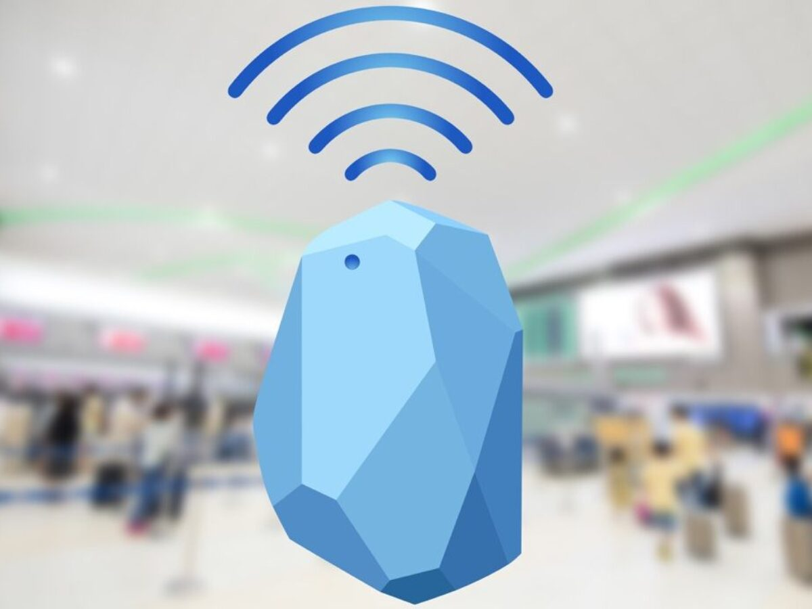

Did you know that some people consider Bluetooth Technology to be magic? It might seem like your devices communicate wirelessly as if by magic, but there's fascinating science behind it. Every day, billions of people use Bluetooth to connect their headphones, sync their smartwatches, or transfer files between devices. Bluetooth uses radio waves to create invisible bridges of communication between gadgets for efficient communication. Today, we will examine Bluetooth and explore how it makes our modern, wireless world possible.

Bluetooth is a popular wireless technology that allows different devices connect and share information without using cables. Instead of wires, Bluetooth sends information using radio waves over short distances. It was first created to replace cords and make it easier for devices to work together, so gadgets can share files, audio, and other data quickly and easily. Today, Bluetooth is built into billions of devices worldwide, changing how we use technology in many areas like personal technologies, healthcare, and entertainment. For personal electronics, Bluetooth connects devices like phones, speakers, earbuds, and smart home gadgets wirelessly. In healthcare, it’s used in wearable fitness trackers and monitors, which help people keep track of their health. In entertainment, Bluetooth provides smooth, high-quality sound and a wireless experience in gaming systems, TVs, and more.

The Bluetooth technology was created in 1994 by engineers at Ericsson, a Swedish telecommunications company. It was developed as a wireless communication system to end the need for long physical cables between devices. Bluetooth wasn't officially introduced to this world until 1999. The name "Bluetooth" actually comes from Harald Gormsson, a Viking king. Now, you might be wondering what does that have to do with Bluetooth? Well, Harald had a rotting blue-colored tooth which is why people nicknamed him, Bluetooth. Another reason they named Bluetooth after him was because he was known for uniting Denmark and Norway during the 10th century, just like Bluetooth unites/links technologies. Since Bluetooth first came out, it has been updated many times, from version 1.0 to the latest version, 5.3. Each new version has made Bluetooth more faster, durable, secure, efficient. These improvements have made Bluetooth a key technology for wirelessly connecting devices like headphones, speakers, and so much more technological devices.

Bluetooth may seem simple to the human mind. Simply connecting a device to another and performing a simple task such as sending files. Despite this, Bluetooth is very complex. Bluetooth works by sending signals between devices using radio waves in the 2.4 GHz frequency range (2.4 Billion Gigahertz per second). To avoid getting mixed up with other signals, it quickly switches between different channels. It generally works over a distance of about 10 meters/33 feet, and how fast it can transfer data depends on the version, with newer versions like Bluetooth 5.0 being the fastest version.
Bluetooth can be used for many purposes. Bluetooth is widely used for wireless audio streaming, such as with headphones and speakers. It also allows for easy sharing of files between phones, computers, and other technological devices. In smart homes, Bluetooth has the ability to connect to devices such as locks, thermostats, and lights to phones or hubs. Wearable technological devices, such as fitness trackers and smartwatches, use Bluetooth to sync data with smartphones. In cars, Bluetooth enables hands-free calling and wireless audio streaming, making it a modern essential feature in modern vehicles.

1. The first Bluetooth device was a wireless headset prototype called "Ericsson T36", used to communicate with cell phones.

2. The Bluetooth logo originates from a combination of Harald's initials, ᚼ (Hagall) and ᛒ (Bjarkan)

3. Bluetooth day is annually celebrated on May 7th, marking it's birthday.
4. Bluetooth was almost named "Flirt", suggesting close interaction!
5. Some malls, airports, and even hotels have whats called a Bluetooth Beacon, a small wireless device used to send signals to nearby devices like notifications, manage room status, or track assets like tractors or tools.
After learning all about Bluetooth, I wanted to use what I’ve learned to build something unique: a Bluetooth speaker made from a recycled Coca-Cola can! I think this project was a great way to show how Bluetooth works, especially how it lets devices connect and share audio without needing any wires. By turning an ordinary can into a working speaker, it can show both the science behind Bluetooth and how we can reuse materials to make new things. I’m excited to demonstrate how Bluetooth lets devices communicate amongst each other wirelessly and why it’s such a useful technology!

How can Bluetooth technology be used to create a functional speaker out of simple everyday objects?
Learning about the science behind its wireless connectivity, and how Bluetooth speakers work. This research went over topics like pairing devices, signalling , and the tools needed to convert audio signals into sound.
Using the basic concept of Bluetooth and audio broadcasting, then it should be able possible to build a working Bluetooth speaker out of a recycled Coca-Cola can as the main foundation for the components
1.Gather materials, including a Bluetooth module, small amplifier, speaker, battery, and a Coca-Cola can.
2.Carefully cut the Coca-Cola can to hold the electronic components securely.
3. Connect the Bluetooth module to the amplifier/speaker, ensuring proper placement inside the can.
4. Pair the Bluetooth module with a smartphone or other Bluetooth-enabled device.
5. Play audio through the setup to test if the speaker can produce sound.
I will record the performance of the speaker, including how well it pairs with Bluetooth devices, sound quality, battery life, and how long the speaker works after being assembled.
I will compare the sound quality and performance of the recycled speaker to a standard Bluetooth speaker. I will also note any challenges in connecting or powering the speaker, and analyze how well the Coca-Cola can functions as the casing for the speaker.
Based on the experiment, I will conclude whether it is possible to successfully create a functional Bluetooth speaker from a Coca-Cola can and what improvements could be made to enhance performance. I will also reflect on how the knowledge of Bluetooth technology applied to the project.
Share findings through a science fair presentation, explaining how Bluetooth technology works, showing the assembled Coca-Cola can speaker, and demonstrating the speaker’s functionality.